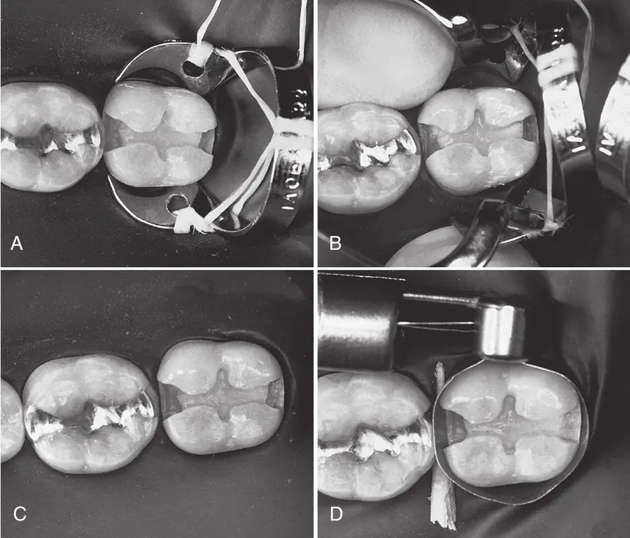

نسخه استخراجشده؛ ترجمه یا تأیید علمی انجام نشده است. وضعیت: captured
تراش کلاس II دیستال مولر دوم پایین، آخرین دندان قوس، تمام شده. کلمپ روی همین دندان است و فکهایش نمیگذارند نوار ماتریکس و وج درست بنشینند. دندانی دیستالتر نیست که کلمپ را به آن ببری. چه میکنی؟

در ترمیم خلفی، دستکم یک دندان دیستالتر از دندان کار را ایزوله میکنی تا کلمپ روی دندان کار ننشیند. وقتی دندان کار خودش دندان لنگر خلفی است، فکهای کلمپ اغلب جای ماتریکس و وج را میگیرند. راهحل: کلمپ را با ماتریکس عوض کن.
فکهای کلمپ نباید از لاینانگلهای مزیال و دیستال دندان لنگر جلوتر بروند، چون فک بلندتر جای ماتریکس و وج را میگیرد، آسیب لثه را محتملتر میکند و سیل کامل دور دندان لنگر را سختتر.
نکتهی طلایی: پیش از تراش دندان انتهایی، نوار ماتریکس و وج را آماده کنار دستت بگذار تا ورق مدت کوتاهی بیکلمپ بماند.